Example 1
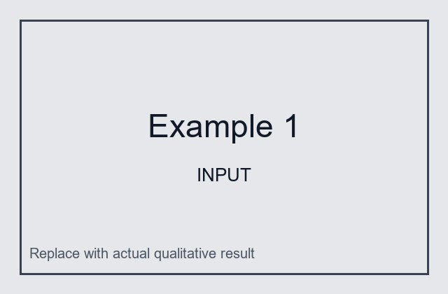
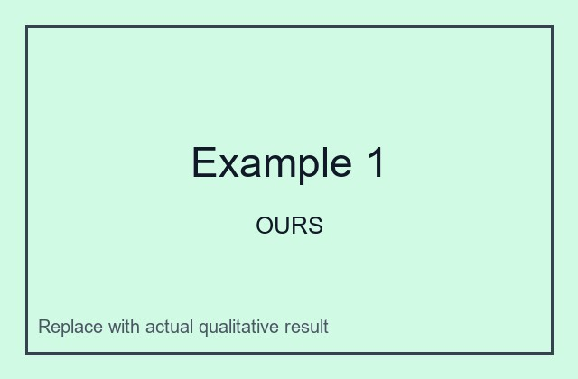
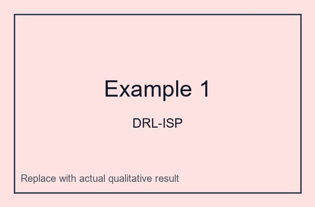
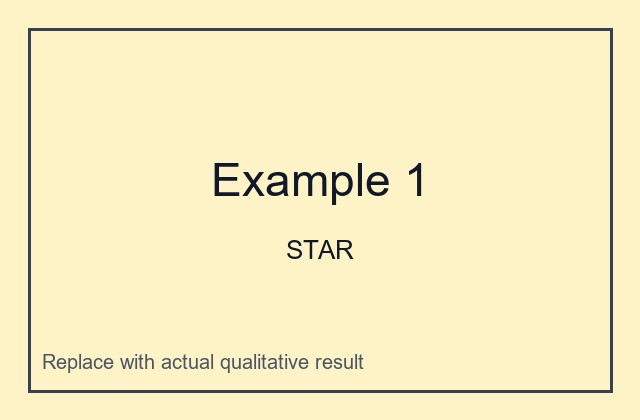
This project explores reinforcement learning for scenic image enhancement. Given an RGB landscape image, an agent observes histogram-based image features and selects continuous image-processing parameters for contrast, brightness, saturation, and gamma correction. TOPIQ is used as a no-reference image quality metric, and the reward is defined by the TOPIQ score difference before and after each adjustment. Unlike supervised image-to-image translation methods that directly predict a restored image, our approach treats enhancement as a sequential decision-making problem, allowing the model to gradually improve the perceptual quality of the input through multiple accumulated operations.
The input image is first represented using histogram-based features. A PPO agent then outputs a four-dimensional continuous action that controls image adjustment parameters: alpha for contrast, beta for brightness, delta_s for saturation, and gamma for gamma correction. Each episode contains multiple steps, so the visual effect of actions accumulates over time. After applying an action, TOPIQ is recomputed on the updated image and the step reward is defined as TOPIQ_after - TOPIQ_before.
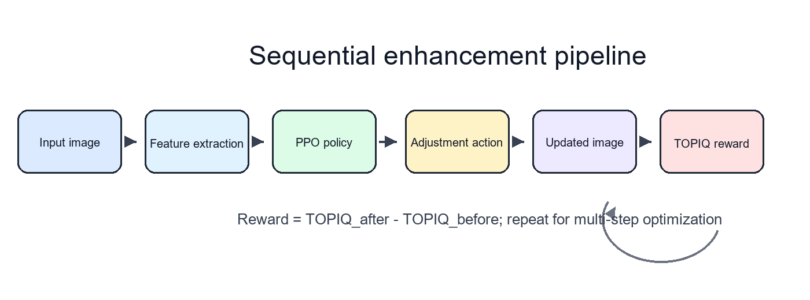
Training, output generation, and the adapted DRL-ISP baseline use the Kaggle Landscape Images Dataset. We choose this dataset because its landscape and scenic image content matches the target domain of this study. Since TOPIQ evaluation is more stable for images at 224×224 resolution in our experimental setting, all experimental images are preprocessed and evaluated with a 224×224 image size.
We use DRL-ISP as a reinforcement-learning-based image signal processing baseline. Rather than using a single network to directly generate the final restored image, DRL-ISP constructs a toolbox of executable ISP operations. A selector observes the current image state and decides which tool to apply at each step, producing a multi-step enhancement pipeline:
Input image → selector chooses tool → multi-step ISP processing → output image
The original DRL-ISP framework was designed mainly for RAW/Bayer-to-RGB camera restoration, where the input is closer to front-end camera sensor data. To adapt it to our general RGB landscape images, we organize paired input/GT images into the required project format and convert RGB inputs into a pseudo-raw four-channel representation compatible with the original architecture. This allows us to reuse existing ISP tool weights and the selector structure. We also apply necessary fixes for Windows compatibility, older PyTorch behavior, and numerical stability so that training and inference can run in our environment.
In our experiments, we train the restoration selector with paired input/GT data using settings including --app restoration, --use_tool_factor, --train_episodes 5000, and --learn_start 100. After training, we load the selector checkpoint and run automatic inference on the test folder, saving both the final enhanced images and the tool-selection records for each sample.
Star Enhancer is included as a machine-learning-based image enhancement baseline. Its quantitative evaluation has not been completed yet, so the corresponding TOPIQ result is marked as TBD. The qualitative comparison section also reserves image slots for Star Enhancer outputs so the results can be inserted after evaluation.
| Method | Input TOPIQ | Output TOPIQ | Improvement |
|---|---|---|---|
| Ours (PPO + TOPIQ Reward) | 59.5785 | 61.1498 | +1.5713 |
| DRL-ISP Baseline | 59.5785 | 45.2433 | -14.3352 |
| Star Enhancer Baseline | 59.5785 | TBD | TBD |
Scores are reported in scaled TOPIQ units. Higher is better.
The qualitative panel is organized as five scenic examples. Each example compares the degraded input, our PPO-enhanced result, the adapted DRL-ISP result, and the reserved Star Enhancer output slot.




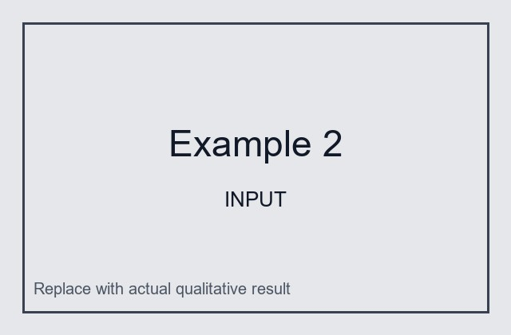
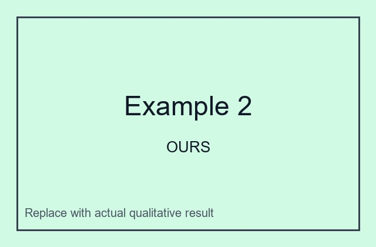
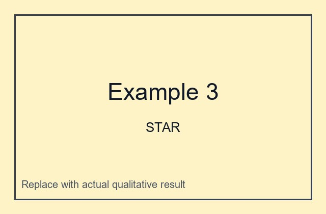
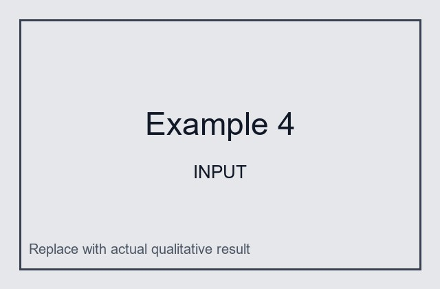
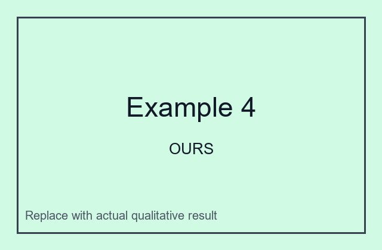
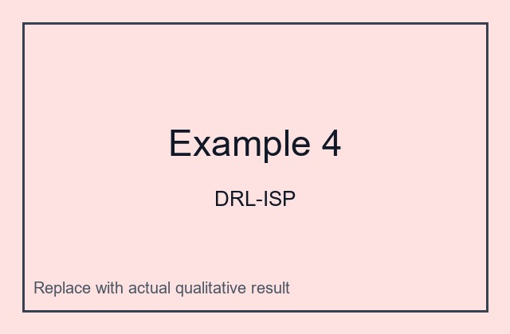
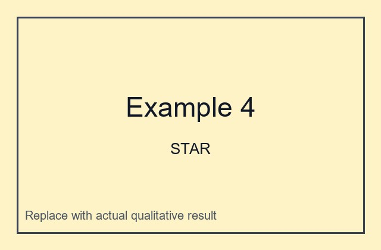
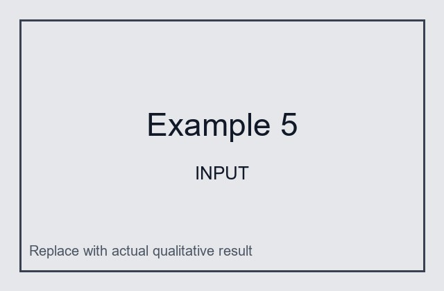
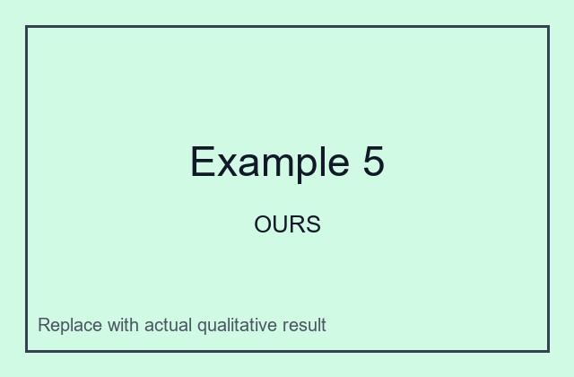
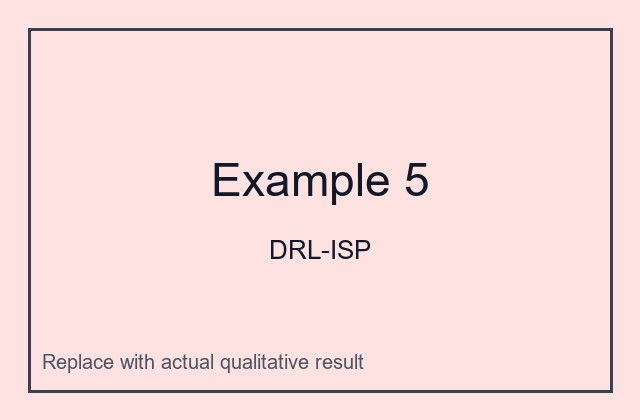
Our PPO-based sequential enhancement policy improves TOPIQ over the degraded input on the test set, while the adapted DRL-ISP baseline shows lower TOPIQ under this RGB landscape evaluation setting. Star Enhancer results are reserved for future comparison once evaluation is completed.
The page currently references placeholder image files under static/images/. Replace each file with the corresponding final image using the same filename.
| Filename | Section | Expected content |
|---|---|---|
banner_poster.jpg |
Hero | A representative scenic comparison or polished overview image for the first screen. |
social_preview.png |
Social preview | 1200×630 preview image for sharing the project page. |
method_flowchart.png |
Method Overview | A clean pipeline diagram showing input image, feature extraction, PPO policy, adjustment action, TOPIQ reward, and next step/final output. |
comparison_01_input.jpg to comparison_05_input.jpg |
Qualitative Comparison | Five degraded or original RGB landscape input images. |
comparison_01_ours.jpg to comparison_05_ours.jpg |
Qualitative Comparison | Outputs generated by our PPO + TOPIQ reward enhancement policy. |
comparison_01_drlisp.jpg to comparison_05_drlisp.jpg |
Qualitative Comparison | Outputs generated by the adapted DRL-ISP baseline. |
comparison_01_star.jpg to comparison_05_star.jpg |
Qualitative Comparison | Reserved slots for Star Enhancer outputs after evaluation is complete. |
@misc{rlscenic2026,
title={Reinforcement Learning for Scenic Photo Enhancement with TOPIQ Reward},
author={Author 1 and Author 2 and Author 3},
year={2026},
howpublished={Course Final Project},
url={https://github.com/annchenn/RL_final_project}
}